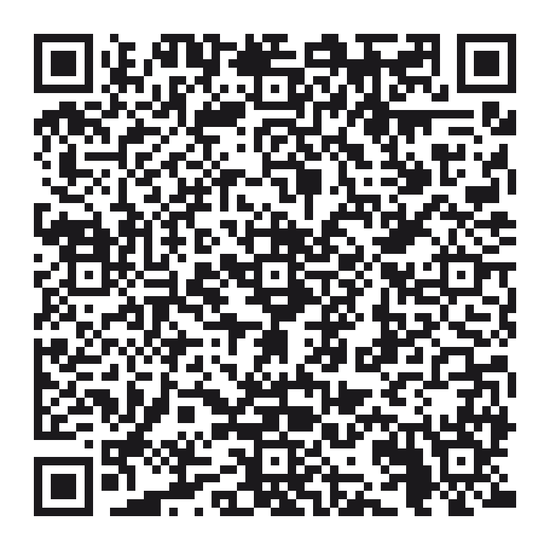

Gustavo Conrado
Coordenação · Tecnologia · Apresentação
Nem tudo que machuca deixa marca.
UMA EXPERIÊNCIA CRIADA POR JOVENS, PARA JOVENS
E se ela não deixasse nenhuma marca?
Algumas violências aparecem em palavras, controles, humilhações, silêncios e comportamentos que aprendemos a chamar de “normais”.
A NOSSA PERGUNTA
“É cuidado.”
“É ciúme.”
“É brincadeira.”
“É jeito de homem.”
E se a gente parasse de normalizar?
01 · NORMAL OU NÃO?
Leia o contexto, escolha o que você percebe e descubra o que pode estar por trás.
SITUAÇÃO
02 · DESCUBRA O INVISÍVEL
Toque nos cartões para revelar outra leitura.
03 · E SE FOSSE COM VOCÊ?
Imagine que alguém próximo conta que está vivendo controle, humilhação ou ameaça.
04 · QUE TIPO DE HOMEM ESTAMOS APRENDENDO A SER?
Questionar padrões abre espaço para relações mais respeitosas, responsáveis e livres de violência.
QUE TIPO DE HOMEM VOCÊ QUER SER?
Escutar.Respeitar.Dialogar.Não impor medo.05 · O QUE OS JOVENS PENSAM?
Nem toda violência deixa marcas visíveis. Queremos saber o que você consegue perceber.
Escaneie o QR Code com a câmera do celular e responda à pesquisa do projeto Violências Invisíveis.
Responder pelo celular →
APONTE A CÂMERAe participe da pesquisa06 · NÃO NORMALIZE
Escolha uma atitude para levar daqui.
07 · QUEM FEZ A EXPERIÊNCIA?
O protagonismo está no centro: pesquisar, criar, comunicar e mobilizar.
Coordenação · Tecnologia · Apresentação
Pesquisa · Dados · Percepção
Comunicação · Mobilização · Campanha
Conteúdo · Experiência · Intervenção
08 · SE PRECISAR, PROCURE AJUDA
Se você ou alguém próximo estiver vivendo uma situação de violência, converse com uma pessoa de confiança e procure serviços oficiais de apoio.
Não substitui atendimento profissional, jurídico ou psicológico.
SE LIGA MOÇADA
Reconheça. Questione. Apoie. Não normalize.
Voltar ao início ↑